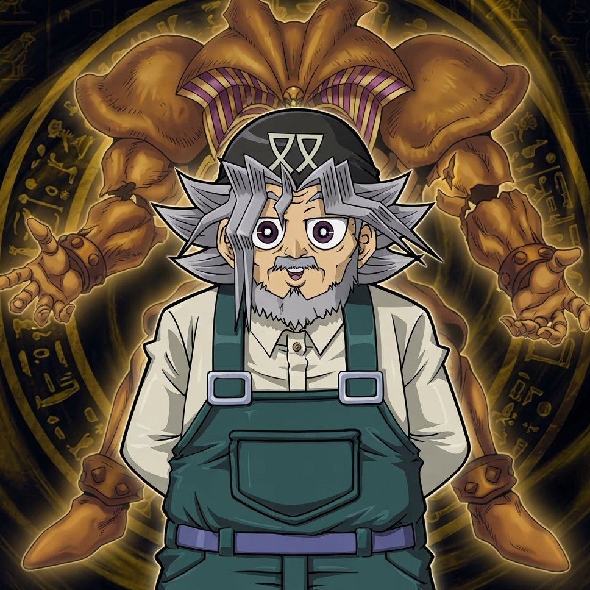

Ogni lezione è un piccolo duello preparato: il nonno ti spiega una cosa alla volta e ti indica cosa toccare. Puoi rifarle quando vuoi.
Le basi
Lezioni brevi
Consultazione

Ogni lezione è un piccolo duello preparato: il nonno ti spiega una cosa alla volta e ti indica cosa toccare. Puoi rifarle quando vuoi.